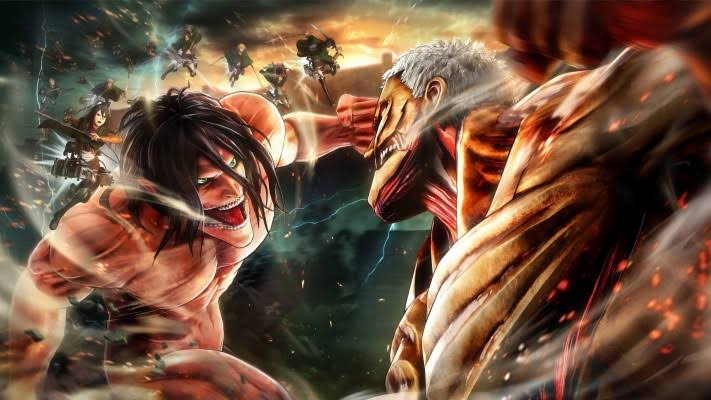

Film
ATTACK ON TITAN

Attack on Titan bercerita tentang umat manusia yang dibantai sejak berabad-abad yang lalu hingga hampir punah oleh makhluk mengerikan menyerupai manusia yang disebut Titan. Hal ini memaksa manusia untuk bersembunyi dan diam dalam ketakutan di balik tembok konsentris yang sangat tinggi dan besar.
Wujud Titan mirip dengan manusia pada umumnya, hanya saja ukurannya bagai raksasa dan gaya berjalan atau larinya yang tidak normal. Hal lainnya yang membuat Titan benar-benar mengerikan adalah bahwa nafsu mereka terhadap daging manusia tidak muncul dari rasa lapar, tetapi hanya seperti kesenangan membunuh semata atau obsesi yang muncul begitu saja setiap melihat manusia.
Manusia yang tersisa dari ancaman kepunahan mulai menjalankan berbagai hal demi kelangsungan hidupnya dalam penghalang pertahanan agar keberadaannya tidak terdeteksi oleh Titan. Hal ini berhasil membuat mereka terjaga dari kontak dengan Titan selama seratus tahun. Namun, upaya dan ketenangan mereka berakhir ketika Titan Kolosal menembus tembok luar pertahanan pertama yang seharusnya tidak tertembus.
Sejak saat itu, ketakutan baru pun muncul. Titan Kolosal membuka jalan bagi Titan lainnya untuk masuk dan menyerang manusia. Kota dan benteng pertahanan yang runtuh menimbulkan kepanikan yang luar biasa hebat.
Pada saat itu, Eren Yeager yang masih kanak-kanak melihat dengan mata kepalanya sendiri bagaimana seorang Titan memangsa ibunya hingga tewas, sementara ayahnya menghilang entah kemana. Sejak saat itu pula, ia berjanji pada dirinya sendiri akan melakukan segala cara untuk membalas dendam
Eren kemudian mendaftar di sebuah akademi militer dan beberapa tahun setelahnya berhasil menjadi lulusan terbaik. Karena tekad balas dendam akan kematian ibunya begitu kuat, Eren lantas bergabung dengan sebuah pasukan pemburu Titan yang dikenal dengan sebutan Survey Corps.
Saat nonton anime Attack on Titan, kamu akan disuguhi berbagai aksi yang mendebarkan melalui perjuangan manusia untuk bertahan hidup dengan berperang secara brutal melawan raksasa yang memiliki badan seratus kali lebih lebih besar dari tubuh manusia. Gerakan perlawanan Eren pun tidak sendirian, ia didampingi oleh Mikasa Ackerman dan Armin Arlert untuk melawan Titan. Mereka saling bahu-membahu dengan sekuat tenaga meskipun pertahanan tembok konsentris sudah mengalami kerusakan total.
Song
KEKASIH BAYANGAN
Padamu pemilik hati yang tak pernah ku miliki
Yang hadir sebagai bagian dari kisah hidupku
Engkau aku cinta dengan segenap rasa di hati
S'lalu ku mencoba menjadi seperti yang engkau minta
Aku tahu engkau, sebenarnya tahu
Tapi kau memilih seolah engkau tak tahu
Kau sembunyikan rasa cintaku
Di balik topeng persahabatanmu yang palsu
Kau jadikan aku kekasih bayangan
Untuk menemani saat kau merasa sepi
Bertahun lamanya kujalani kisah cinta sendiri
Mungkin memang benar
Cinta itu tak lagi berharga
Semua percuma bila engkau tak punya ikatan
Aku tahu engkau sebenarnya tahu
Tapi kau memilih seolah engkau tak tahu
Kau sembunyikan rasa cintaku
Di balik topeng persahabatanmu yang palsu
Kau jadikan aku kekasih bayangan
Untuk menemani saat kau merasa sepi
Bertahun lamanya ku jalani kisah
Cinta sendiri
Cinta sendiri
Ohh
Aku tahu engkau sebenarnya tahu
Tapi kau memilih seolah engkau tak tahu
Kau sembunyikan rasa cintaku
Di balik topeng persahabatanmu yang palsu
Kau jadikan aku kekasih bayangan
Untuk menemani saat kau merasa sepi
Bertahun lamanya kujalani kisah cinta sendiri
Cinta sendiri.
Game
VALORANT

Valorant adalah sebuah game first person shooter dengan mode kompetitif utama pertarungan 5 vs 5, di mana kedua tim bergantian menjadi penanam Spike maupun pelindung peta selama 25 ronde, menentukan tim mana dengan kemenangan terbanyak!